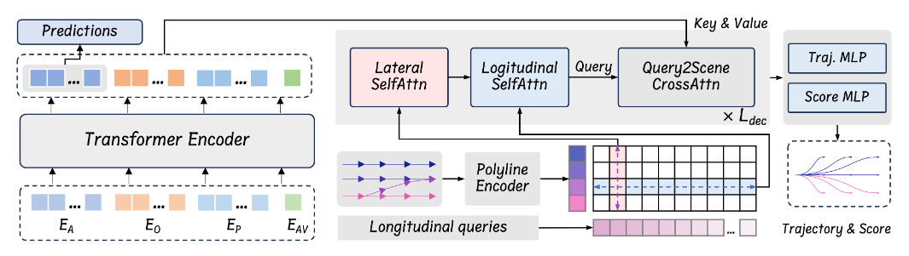
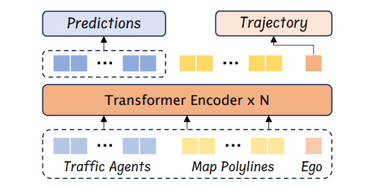
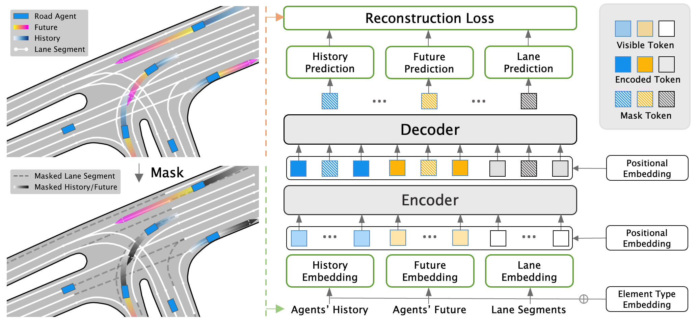
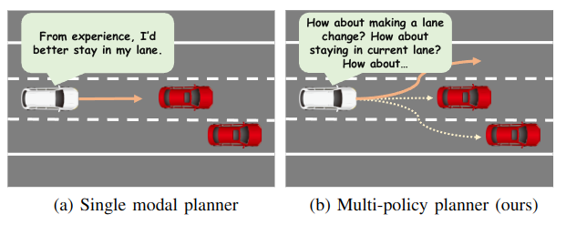
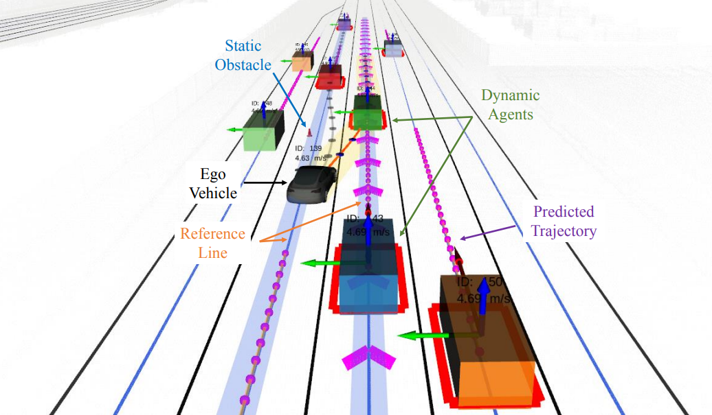
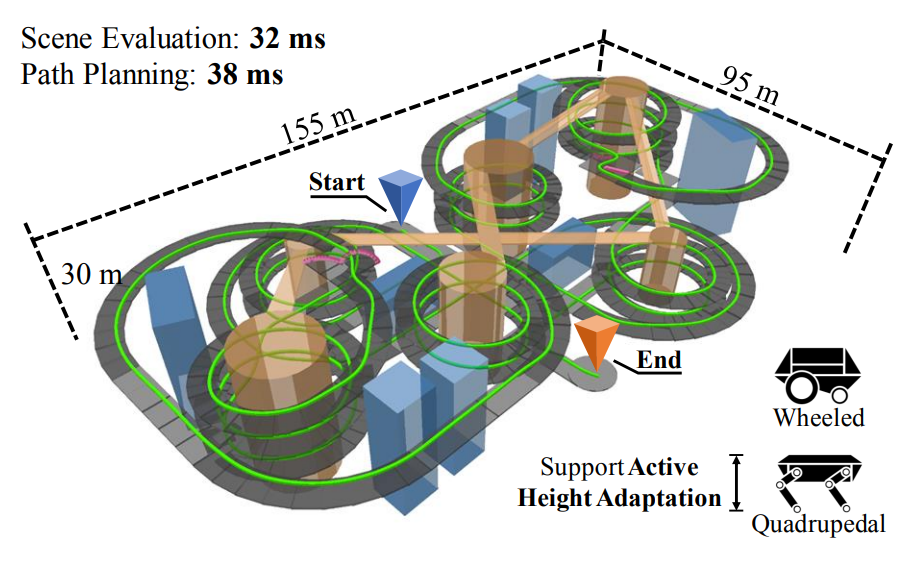
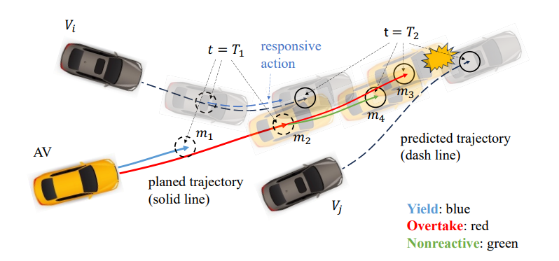

@misc{jcheng2023plantf,
title={Rethinking Imitation-based Planners for Autonomous Driving},
author={Jie Cheng and Yingbing Chen and Xiaodong Mei and Bowen Yang and Bo Li and Ming Liu},
year={2023},
eprint={2309.10443},
archivePrefix={arXiv},
primaryClass={cs.Ro}
}
|
Jie Cheng I am a Ph.D. student supervised prof. Qifeng Chen at the Cheng Kar-Shun Robotics Institute (CKSRI), the Hong Kong University of Science and Technology (HKUST). Before that, I obtained a Bachelor's degree at Qiming College, Huazhong University of Science and Technology in 2019. My research interests lie in finding simple and scalable solutions to the challenging decision-making and planning problems in autonomous driving and robotics. |

|
|
|
|  |
Jie Cheng, Yingbing Chen, Qifeng Chen Under review, 2024 Paper (soon) / Page / Code |
|  |
Jie Cheng, Yingbing Chen, Xiaodong Mei, Bowen Yang, Bo Li, M. L. IEEE International Conference on Robotics and Automation (ICRA), 2024 Paper / Page / Code / |
|  |
Jie Cheng, Xiaodong Mei, M. L. IEEE International Conference on Computer Vision (ICCV), 2023 Paper / Code /
@inproceedings{cheng2023forecast,
title={Forecast-mae: Self-supervised pre-training for motion forecasting with masked autoencoders},
author={Cheng, Jie and Mei, Xiaodong and Liu, Ming},
booktitle={Proceedings of the IEEE/CVF International Conference on Computer Vision},
pages={8679--8689},
year={2023}
}
|
|  |
Jie Cheng, Ren Xin, Sheng Wang, M. L. IEEE International Conference on Intelligent Robot Systems (IROS), 2022 Paper / Video / Page / Code /
@inproceedings{cheng2022mpnp,
title={MPNP: Multi-Policy Neural Planner for Urban Driving},
author={Cheng, Jie and Xin, Ren and Wang, Sheng and Liu, Ming},
booktitle={2022 IEEE/RSJ International Conference on Intelligent Robots and Systems (IROS)},
pages={10549--10554},
year={2022},
organization={IEEE}
}
|
|  |
Jie Cheng, Yingbing Chen, Qingwen Zhang, Lu Gan, M. L. IEEE International Conference on Robotics and Automation (ICRA), 2022 Paper / Video / Code /
@inproceedings{cheng2022real,
title={Real-time trajectory planning for autonomous driving with gaussian process and incremental refinement},
author={Cheng, Jie and Chen, Yingbing and Zhang, Qingwen and Gan, Lu and Liu, Chengju and Liu, Ming},
booktitle={2022 International Conference on Robotics and Automation (ICRA)},
pages={8999--9005},
year={2022},
organization={IEEE}
}
|
|  |
Bowen Yang*, Jie Cheng*, Bohuan Xue, Jianhao Jiao, M. L. (*equal contribution) IEEE Transactions on Mechatronics (T-MECH), 2024 Paper / Code /
todo
|
|  |
Yingbing Chen, Jie Cheng, Lu Gan, Sheng Wang, Hongji Liu, M. L. IEEE Transactions on Intelligent Transportation Systems (T-ITS), 2023 Paper / Code /
@article{chen2023ir,
title={IR-STP: Enhancing Autonomous Driving with Interaction Reasoning in Spatio-Temporal Planning},
author={Chen, Yingbing and Cheng, Jie and Gan, Lu and Wang, Sheng and Liu, Hongji and Mei, Xiaodong and Liu, Ming},
journal={arXiv preprint arXiv:2311.02850},
year={2023}
}
|
|
Reviewer
|
|
|